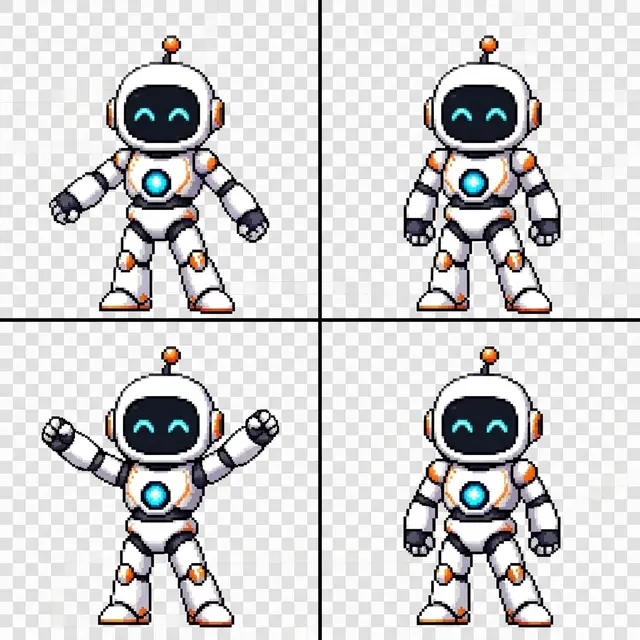

Meshy’de orijinal çizimle 2D denemesi
Nano Banana Pro · Tek üretim · 9 kredi
Meshy’nin dört karesiKare 1 / 4 Bu sonuç çizimi birebir korumadı. Yalnızca önkol yerine iki kolun pozunu da değiştirdi; kareler arasında belirgin sıçrama var. Uygulamaya eklenmedi.
Üretilen şeridi göster
Bu dosya Meshy'nin önizleme görselidir.
